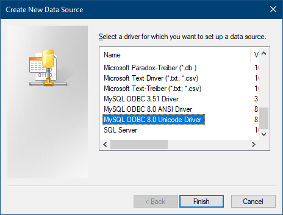

ODBC
See Database Management Systems.
ODBC is a standardized data connection format which will allow all your data to be directly available to other programs without having to do an export first. Any program can then access the database including Word, Excel, Access, and OpenOffice.org. You will have to install the ODBC driver on each computer where you want to access the database.
ODBC connections are not an option to use as a data source for our actual client software. See Multiple Locations for better options such as Middle Tier or VPN with direct connection.
Download and install the MySQL ODBC version 8.0.12 (32-bit) driver from https://downloads.mysql.com/archives/c-odbc/
- Open Control Panel, (Performance and Maintenance), Administrative Tools, ODBC Data Sources (32-bit).
- Click on the second tab, System DSN.
- Open Dental will not be on the list, so you will be adding it to the list which will make it accessible from other programs.

- Click Add.
 - Find the MySQL ODBC driver on the list, and click Finish.

The Data Source Name is just any name that you want to use to refer to this data source. Fill in the Host/Server Name, Database Name, User, and Root as described in setting up the freedentalconfig.xml file. The Host/Server name will only be localhost if you have one computer that is not networked. Otherwise, it will be the name of the computer that is the server. The database name will be opendental unless you have changed it. The username will be root with no password unless you have set up passwords in MySQL/MariaDB.